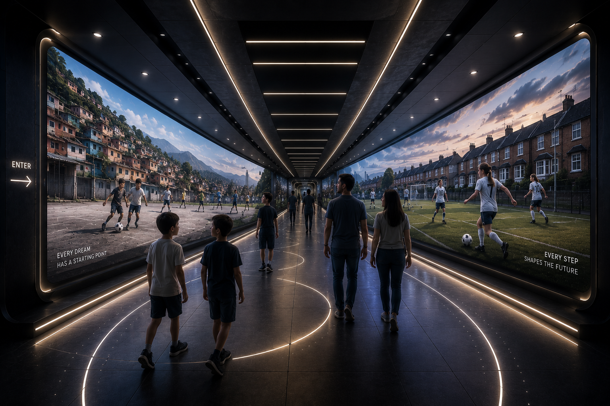
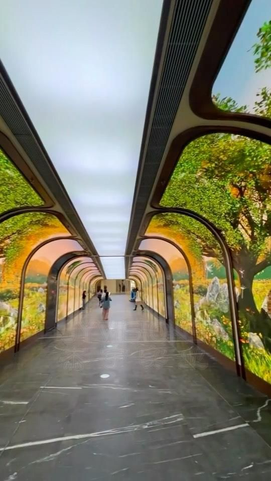
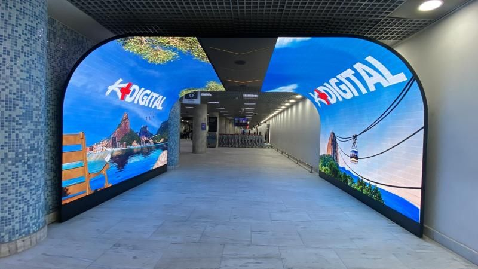

The pass that never lands
The ball hangs mid-air in slow motion at the center of the wall. Visitors walk underneath it and look up.
A walk-through experience for the FIFA museum. Walls and floor in LED, no display ceiling. Visitors move through stories of players from across the world: where they grew up, who they became, the journey between. Three environments for Alpha Phase. Format is rights-flexible, so the concept works with named legends and with composite players.
Top view. Sixty feet long, twelve feet clear width. LED on both side walls and on the floor. Visitors enter on one end and exit on the other, watching one player's history unfold across the length of the room.



Each environment tells one player's history across the room. Childhood streets, dream-big graffiti, the local pitch, the youth team, the move abroad, the breakthrough club, the Champions League roar. Visitors witness how the legend was made.

![Wide panorama showing a woman player's history from a toddler in pink kicking a ball outside a clapboard house with a US flag, through a kid running on a dirt road, a teen player against a sunset city skyline, a red European youth kit, a UCLA #17 college kit on a campus pitch, a study scene with a UCLA sweatshirt and laptop, a USA #17 white national kit, an FC Barcelona / Qatar Airways red-and-blue club kit, and ending in a USA #17 World Champions celebration with a trophy and 'WORLD CHAMPIONS' banner.](images/origins-women.png)
The wall is the timeline. Same hero, traced from where they started to where they ended up. The floor pulls you forward through the years, and the story accumulates as you walk.
Rights-flexible by design. With clearance, the history is real, named, archival. Without it, a composite life maps the same arc. The story reads either way.
Reference imagery for the room and the player histories. LED architecture, kids on the pitch, adult moments, family-album textures.




Tunnel references via Pinterest: JYVISIONS curved-arch LED / K-Digital airport tunnel
The closest visual language to what Around the World should feel like.
Universal Everything is a Sheffield-based experience design studio working at the edge of motion design, generative systems, and architectural-scale digital environments.
Founded in 2004, they collaborate with brands, museums and cultural institutions on building-scale LED facades, immersive installations, and choreographed digital environments. Their vocabulary (abstract human motion, fluid generative form, content that responds to architecture) is the spiritual reference for this project.
universaleverything.com →Reference imagery via universaleverything.com


Moments, mechanics, atmospheres. Some are full concepts, some are 30-second seasonings. Cherry-pick.
The ball hangs mid-air in slow motion at the center of the wall. Visitors walk underneath it and look up.
The LED floor only renders the pitch where you step. A grass trail blooms behind every visitor.
An abstract stadium crowd on the wall whose density and noise scales with how many visitors are inside.
Macro shot of a single muddy boot. A kid's voice describes her hero in her own language.
Audio and lighting shift to match the actual weather of the city on the wall right now.
Your footsteps light up the floor with the player's actual match-footwork data from a famous moment.
Kid and adult version of the same player, side by side on one wall, running in perfect sync.
Visitors' names and countries are scrawled into the wall textures over time, accumulating.
Wall pulse synced to a player's real in-match heart rate from a famous moment, felt before it's understood.
Player's entire career compressed to your walking speed. Walk fast, life flies. Stop and a moment lingers.
At entry, kids on the wall throw the ball to you. Your floor lights track it for the duration of your walk.
Follow the ball, not the player, across continents and decades. Players are supporting cast.
Wall shows a goal made of two streetlamps. Mum watching from the doorway, little brother as keeper.
Cross a marked floor line and the language, music, ball texture and kit colour all change.
Tiny framed scenes of mothers, sisters, neighbours watching from balconies and rooftops.
The ball backheel-passes from kid to kid down the length of the wall until it reaches the adult.
A quiet beat: the wall fills with rain, one kid plays alone. You stop walking. Then it lifts.
Local commentators in their own languages, no subtitles. Emotion lands without translation.
Old men on a pitch-side bench commenting on the kid. Subtitles only appear when you stop walking.
Your FIFA avatar from the other games gets invited into the kid's pickup match on the wall.
The kid dribbles past invisible defenders that exist only on the floor LED beneath you.
Fake-sky ceiling shifts to each city's actual current time-of-day. Sunset in Buenos Aires, dawn in Tokyo.
At the climax wall, every angle of one famous goal plays in unison across the full surface.
Between scenes, walls of family photos: christenings, school photos, birthdays, first training kits.
Small recessed niches with the actual youth boots from each player on display: physical objects in a digital room.
The floor LED constantly shows earth. Glowing lines trace each player's journey across it as you walk.
One wall renders as a kid's room. Posters of their idols by the entrance, their own poster on the wall by the end.
Kid does keepy-uppies on the wall. A floor square invites visitors to try along, and the wall counts both.
Invented audio dispatches from each player as a kid (lo-fi, like phone recordings), heard as you pass.
At the exit, the kid's match is still going on a small wall. Life-size, looping. You leave but it doesn't end.